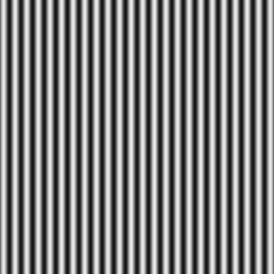
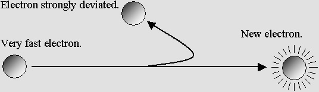
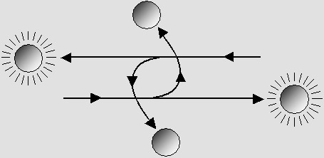

| 00 | 01 | 02 | 03 | 04 | 05 | 06 | 07 | 08 | 09 | 10 | 11| 12 | 13 | 14 | 15 | 16 | 17 | 18 | 19 | 20 | 21 | 22 | 23 | 24 | 25 | 26 | 27 | 28 | 29 | 30 | 31 | 32 | 33 | 34 |
Charles Darwin's
THEORY OF EVOLUTION
revisited.
IN THE BEGINNING OF TIMES, THERE WAS NOTHING BUT THE AETHER
|
Nowadays most scientists are quite sure that aether does not exist. Surprisingly, none of them checked this carefully. They just learned it from their professor. The point is: you are not entitled to think that the aether is useless. You simply cannot prove it. If you think so, you surely are unaware of the standing waves amazing properties. And you did not carefully study Lorentz's version of Relativity, which finally proves to be true. This web site postulates that matter is made of "moving standing waves" and that all forces are waves. Those waves need an aether. In addition, Relativity was discovered by Lorentz and Poincaré in 1904. Not by Albert Einstein. Their original version, especially Lorentz's, admits the existence of the aether. Lorentz never discarded the existence of aether until his death in 1928. Unfortunately, Lorentz was unaware (until he was very old, in 1927) of de Broglie's "matter waves". This would have helped him around 1895 in order to explain the cause of his transformation. Standing waves actually undergo the Lorentz transformation. It is that simple. Any average intelligent person should firstly doubt Einstein's ridiculous ideas. Physics should be an exact science. Not a religion. So, let's postulate that matter is made of waves and that those waves need a carrier: aether. Assuming this, you may imagine any hypothesis about its origin. In accordance with the Causality Principle, any effect has a Cause. And because our material universe is made purely out of aether, this Cause cannot be material any more. So it should be un-material. You may explain the World's origin the way you prefer. You may also give this most honest and sincere answer: "I don't know". And so, in my opinion, one should postulate that an aether filled with waves which contain a lot of energy had to exist in the beginning of times. Then the continuation was foreseeable: |
|

1 - THE CREATION OF THE AETHER
|
Matter standing waves and force waves simply need an aether. Let's postulate that it can transmit regular longitudinal traveling waves without any loss. In all good faith and sincerity, one must admit that there is no material explanation for aether. Its origin is postulated to be un-material. |
2 - THE BIG BANG (also revisited).
|
The aether cannot be fully rigid because it can transmit waves. It must be elastic. On the other hand, at least in mathematics, the infinite does not exist. So the aether cannot be infinite, either. Its elasticity does not necessarily leads to its expansion, but all our observations indicate that our universe is really expanding. So let's postulate that in the beginning of times the aether suddenly begun to exist. Then there was a huge explosion which generated powerful and abundant waves. This model does not involve any temperature, albeit aether granules could locally be capable of static vibrations. This new Big Bang theory indicates that an expanding aether could allow galaxies traveling at speeds greater than the speed of light as compared to those in the center. Such galaxies could be so distant and so fast that they would be invisible. They could nevertheless be practically at rest inside their own portion of aether. This new approach eliminates any reference to the speed of light in order to establish their age and their distance. Otherwise, we know that our universe should be about 15 billions of years old. Finally, our universe could be much more ancient. |
3 - THE ELECTRON CREATION
|
The first step after the aether creation must have been the electron creation. One can show that according to Huygen's Principle, many plane waves traveling inside aether could add themselves and produce an electron. Because the whole universe is made purely of electrons, and assuming that an aether filled with waves exists, our universe then must exist. It is just a question of time. Without any existing electron, this situation is not likely to happen, but it must happen. One chance out of billions of billions, because the wavelength and the phase must match during a very short period of time. However, with billions of existing electrons, whose wavelength is almost the same, this situation becomes much more probable. There is still one chance out of billions. But because the time is almost infinite in such an universe, this situation is not just probable: it is a certainty. The diagram below shows that many plane waves can generate a concentric wave system, in other words an electron. Here there is only one plane, and this leads to a half wavelength central core. However, more waves coming from many directions would produce a full wavelength core instead. |
|
 |
The electron creation.
Just a few waves can produce a spherical standing wave system.
Then this system completes itself, and it can be stable because it is amplified by aether waves.
|
Those waves must coincide in the centre for at least several wavelengths. Then the standing wave system is amplified by aether waves and it remains stable forever. New electrons can be more easily generated while there are many existing electrons around, because they produce waves whose frequency and wavelength is almost constant. Without any existing electrons around, the chances are much smaller. In the beginning, the available time was nearly infinite. Who knows how many "years" were needed in order to make billions of electrons? In all cases, their creation was unavoidable. This indicates that as soon as an aether filled with waves exists, our universe must exist. This is only a matter of time, or a matter of chance. |
4 - THE QUARKS CREATION
|
A quark is simply made of two electrons (or two positrons) very close together. However, especially on the axis joining them, their standing waves are adding themselves in a very special way. One obtains a set of plane standing waves whose phase is different in the center, canceling the normal electron negative charge. This produces a very strong "gluonic field" which can attract any other particle, and whose mass is much greater than that of one electron. This electron pair with its gluonic field then looks very much like a totally different particle. In the beginning, the electrons' phase was randomly distributed. There was no specific electrons or positrons. As soon as a reasonable number of particles were present inside aether, those whose phase was opposite were certainly attracted together and they collided. We know that such a collision produces quarks, but most scientists think that the electron and the positron annihilate. Actually, it is much more logical to suppose that those two particles still exist inside the quarks, but that the strong gluonic field is hiding them. Quarks are highly unstable. However, two electrons and two positrons can join together and form a two-quarks meson, which is more stable. Then another quark can join and produce a neutron. Quark pairs. There could be another process. We know that a collision between an electron and a positron produces two quarks, which are not identical. This could be explained by another way of producing electrons. Most likely, one electron and one positron traveling towards each other will not truly hit each other. Their wavelength is so small that their central core cannot coincide. They will rather follow a rotating elliptical trajectory much similar to that of binary pulsars. This is called "positronium", also a highly unstable particle. However, as soon as those electrons and positrons come very close together the first time, they must change their direction in a very severe manner, the way a comet does while circumnavigating the Sun. This severe U-turn supposes that the standing waves near the core of those particles will be transformed. The farthest ones will not; they will simply focus where the particles were supposed to be before colliding. The electron core is very small but actually its standing waves fill a huge volume much larger then that of an atom. So, beyond a certain threshold, very fast electrons or positrons can duplicate themselves while colliding. They will join themselves and finally make two quarks instead of just one: |

The farthest standing waves cannot follow a severely deviated electron.
Those waves will focus where they were supposed to and create a new electron.

The collision involves one electron and one positron.
Finally there are four particles, making one quark and one anti-quark.
|
Those particle can even deviate at least one more time allowing them to produce a second quark pair. Gluonic fields should occasionally join two quarks together and produce a more stable unit: a meson. This meson could contain three or four electrons or positrons, and the system phase could be different from that of normal electrons or positrons. One can suppose that a meson containing three electrons at the vertices of a triangle should be stable because the three gluonic fields are especially efficient in such a position. One can also imagine four electrons at the vertices of a tetrahedron, or of a plane square. Here, there are six gluonic fields, whose mass should be important. Then a third quark or a second meson could transform them into a neutron. Three quarks could also produce a neutron in just one step, but this situation is not likely to happen. Then a positron can join the center of a neutron and produce a proton. Finally, the proton can capture an electron, making them a hydrogen atom. As shown above, billions and billions of hydrogen atoms will produce stars, and the evolutionary process will continue. |

DARWIN'S THEORY IS INCOMPLETE
|
Because there is a lot of information indicating that life evolved on Earth for at least 4 billions years, any true scientist (that is, fully in possession of his intelligence and objectivity) should admit that Charles Darwin was right. For instance, one can follow the horse's evolution since its "eohippus" ancestors, about 50 millions years ago. This is not debatable any more. Surprisingly it is still debated nevertheless, mostly by people who try by any means to make their religion fit in a more convenient picture. The evolution theory should also include matter. On the other hand Darwin only spoke about the "evolution of species", i.e. plants and animals. I am of the opinion that Evolution Theory should also include matter, because the whole universe evolved as well from its very beginning. About 15 billions years, probably more. Our knowledge also evolved: Darwin was unaware of this. Natural selection does not fully explain evolution. Darwin was also unaware of DNA, chromosomes, and genetic mechanisms. Nowadays, it is a well known fact that if they were transmitted unchanged during many centuries, they very slowly but surely lead to fully static and uniform species for a given environment. So natural selection does not fully explain evolution. The main cause is accidental and occasional mutations inside DNA. Evolution is controlled by chance, if chance does exist. Darwin emphasized natural selection, which now appears to be just one aspect of the mechanism. This is important because chance also controlled the evolution of the whole universe from its very beginning. Determinism. And if chance does not exist, your freedom is purely illusion. In this case, tomorrow already exists in the energy of an infinity of waves and in the motion of an infinity of electrons. Then you can do nothing about it: tomorrow will occur, unrelentingly.
LET'S THINK According to Darwin, we are mammal primate hominids, in other words, just animals. Our most recent discoveries about our ancestors, up to six million years, indicate that mankind, gorillas and chimpanzees have common ancestors. Darwin did predict that. They lived about 15 millions years ago. Those discoveries also indicate that about 10 million years ago, our definitely human ancestors were already biped. They had a small brain, not bigger than that of chimpanzees. However, they had already begun to perform an amazing phenomenon: to think. Knowing this, any human capable of thinking should conclude that just one man and one woman simply could not give birth to the whole of mankind. Let's face it: Adam and Eve, from the Bible, never existed. During all those years, thousands of humans were simultaneously living in Africa. They evolved there in much the same way as all other animals, but they evolved faster and better. Darwin was aware of that, but he did not dare to write it. So today one must affirm it clearly. We think with our brain. Let's lastly say something that very few courageous people will admit: we are thinking with our brain. This is also a fairly recent discovery, for it occurred after Darwin's epoch. This means that at the very instant of our death, logically, we stop thinking. It is about time that everyone realizes this. Ancient Roman people used to explain that any dying person had to "expire" in order to let his soul escape from his body. They called this last breath "anima", which simply means air, and the soul name soon followed as "animus". However, they were not aware that air was material. They simply noticed that the invisible and apparently un-material wind could cause a strange effect on their skin, and that this last air pulse could very well explain the also apparently un-material nature of their thoughts. I do not say here that human beings have no soul. I simply note that those two apparently metaphysical reasons which have been invoked in order to explain the soul's existence have been clearly identified as being physic ones. So they belong to physics. If this does not satisfy your personal metaphysical thoughts, I cannot help. I just want to discuss physics. So please avoid annoying me about your emotional feelings and just discuss physics, because it is an exact science. Physics is the science of truth and reality. We are animals. We are nothing but animals. Fortunately, we are animals who can think. This is a major advantage, but this still does not exclude us from the animal kingdom. Many readers told me that they see themselves "on a higher level", but they can't explain why. Let's face it: we are simply animals. This observation should redirect us towards a better knowledge of our behavior, for example by comparing it with that of gorillas and chimpanzees, our cousins. Psychology is not an ideal: it is a science. Our behavior as a science follows the same rules as in physics. It should need observations and experiments, and it should avoid being distorted by our thirst for absolute. One must firstly distinguish what we are from what we should be. Clearly, we cannot see the difference any more. Our behavior was imperatively inculcated into us under the terms of often debatable principles. We cannot establish laws and habits which are compatible with our true nature any more. The result is that too many of us are frustrated, badly adapted, and unhappy. We are evolving backwards. Darwin did not point out that natural selection is not working properly any more because we can and do interfere. We do not accept its essential role. We can cure a lot of severe diseases which would have prevented many people from giving birth to more people suffering from the same diseases. We do not inform those people that their health problems are likely to be transferred to their children. This leads to a deterioration of mankind's general health. Mankind is a fantastic achievement, proving that evolution normally works towards perfection. Our illogical behavior will cancel this, though. Mankind is likely to degenerate and suffer for years, and finally disappear. Let's make it clear: a conscious, advised and responsible selection is required. Otherwise, we will simply terminate our trek. Nobody will ever be capable of repairing a human being inside all of his genes. No medicine, no genetic treatment can help. Our Earth is overpopulated. Nobody seems to worry about the formidable population increase nowadays. Once again, this is a severe disturbance of the normal species evolution: http://www.ibiblio.org/lunarbin/worldpop http://www.census.gov/cgi-bin/ipc/popclockw Even a stabilization will not be enough. Our planet needs an equitable and reasonable depopulation. While waiting, we are confronted with devastating pollution, generalized deforestation and the disappearance of a tremendous number of vegetal and animal species. The damage that overpopulation has already caused is enormous and irreversible. There is a point of no return. We must intervene radically right now. Evolution in the future. Some day, because evolution normally works towards perfection, more animals and even plants may also be capable of thinking. Such events may happen in billions of years from now, or sooner, here or anywhere in the universe, but they will happen. Students should avoid constantly repeating other's ideas. They should doubt them, in accordance with Descartes' "doubt is the origin of wisdom". Actually, most of the 6.5 billion people on this planet are very often wrong, and this leads to more errors, and finally to decadence. Many people also intentionally spread errors, for political or financial reasons. Many people even lie to their own children, which is definitely the most despicable thing on Earth. Let's make it clear: unless he admits it, anybody who is in doubt does not say the truth, and so he lies. A lot of schools, high schools and Universities in North America simply avoid speaking of Darwin in order to "preserve" their student's religion. Some of them even pretend that Darwin was wrong. I myself had to suffer this shame. I had been recruited as a boarder student by a very special college among all of Quebec's seventh grade best scholars. I had to perform the IQ test (they used to eliminate all candidates below 140) and finally, I took the ancient "classical course" in a highly erudite environment. In spite of that, I was not told about Darwin. And what is more, I had to undergo a severe brainwashing. Fortunately, I realized that all this was wrong. I decided to escape at the age of 19, but I nevertheless had to struggle all my life in order to repair my ideas. I am still angry about it. Very angry. Think about it. The goal is to improve our future. Because we are animals who can think, and because this is our major advantage, the correct tool is thinking. We must repair our wrong ideas. We must also look for new ideas, and we must check whether they are wrong or not. I had to think all my life. It was worth the effort because I discovered that matter is made of waves. And naturally, I can prove it. |
| 00 | 01 | 02 | 03 | 04 | 05 | 06 | 07 | 08 | 09 | 10 | 11| 12 | 13 | 14 | 15 | 16 | 17 | 18 | 19 | 20 | 21 | 22 | 23 | 24 | 25 | 26 | 27 | 28 | 29 | 30 | 31 | 32 | 33 | 34 |
|
Bois-des-Filion in Québec. Email Please read this notice. On the Internet since September 2002. Last update December 3, 2009. |